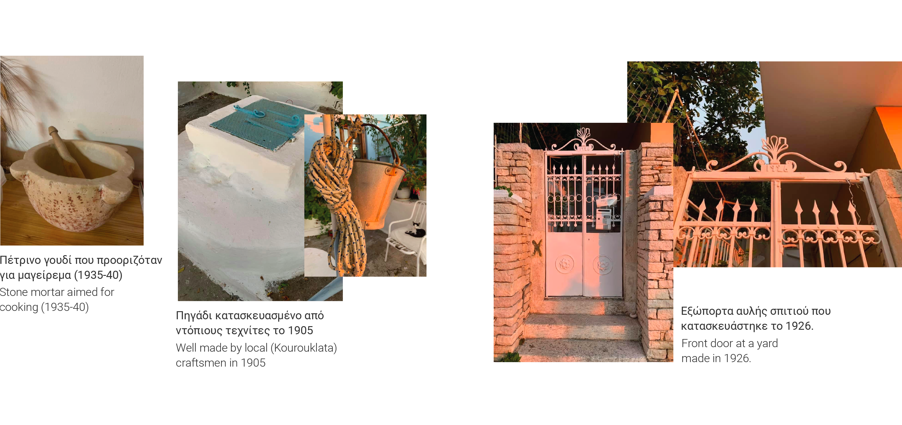
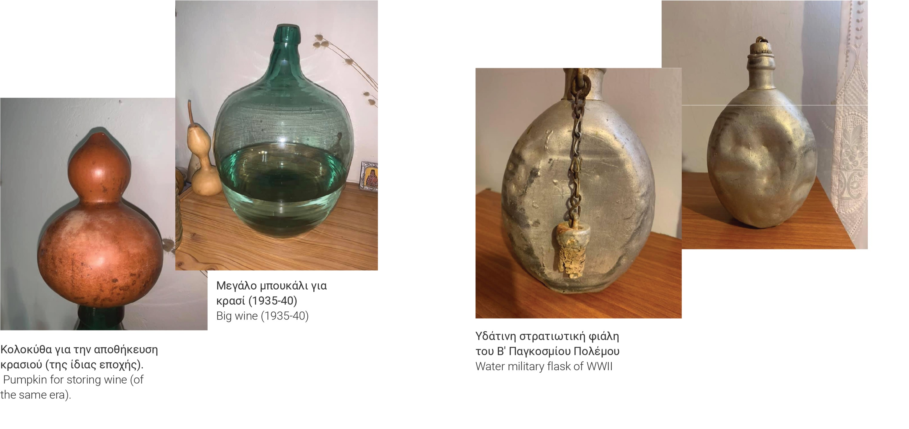
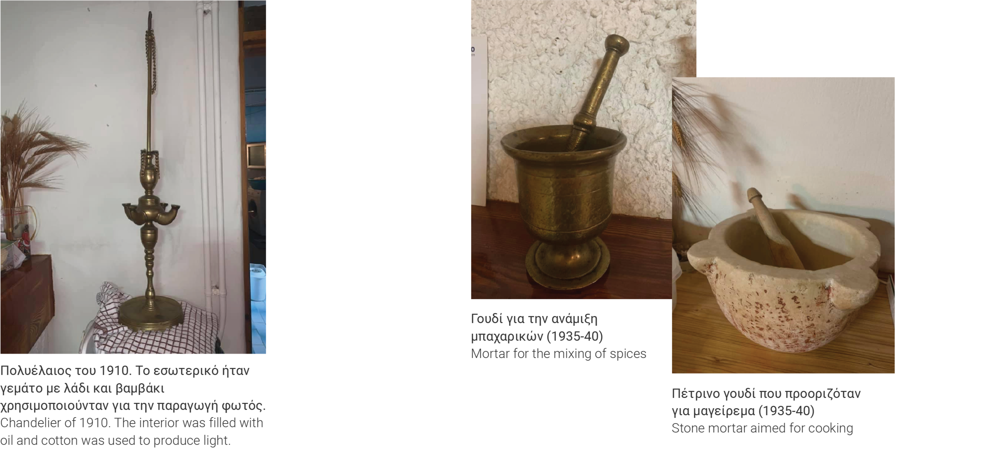

“Είχαμε μια ήσυχη ζωή. Ο πατέρας μου πήγαινε κάθε πρωί στα χωράφια καθώς ήταν αγρότης, η μητέρα μου ασχολιόταν με το σπίτι, και εγώ και η αδελφή μου πηγαίναμε στο σχολείο και αργότερα παίζαμε στην αυλή. ”
“We had a quiet life. My father would go every morning to the fields, as he was a farmer, my mother would deal with the houdehold, and me and my sister would go to the school and later play in the yard.
”
Προσωπικά Άνέκδοτα
Personal Anecdotes
“Την Κυριακή 9 Αυγούστου παρακολουθούσαμε τη λειτουργία στην εκκλησία του χωριού. Τότε ήταν που άρχισε το τρέμουλο. Ήταν 6,5 στην κλίμακα Ρίχτερ. Ο ιερέας μας προσπάθησε να μας κρατήσει ήρεμους, αλλά ήμασταν σε κατάσταση πανικού. Κατά τη διάρκεια της υπόλοιπης ημέρας δεν συνέβη κανένας άλλος σεισμός, αλλά πήραμε τα στρώματά μας και κοιμηθήκαμε στο ισόγειο για ασφάλεια. Την Τρίτη 11 Αυγούστου σημειώθηκε ένας ακόμα σεισμός. Από τους συγχωριανούς μας ακούγαμε για μεγάλες ζημιές στη Σάμη. Το βράδυ παίρναμε τα στρώματα και τις κουβέρτες μας και κοιμόμασταν σε ένα χωράφι απέναντι από το σπίτι μας. Ο φόβος αυξανόταν συνεχώς.”
“On Sunday 9th August we were attending the service at the village church. It was then that the shaking begun. It was 6,5 in the Richter scale. Our priest tried to keep us calm, but we were in a state of panic. During the rest of this day no other earthquake happened but we took our mattresses and slept in the ground floor for safety. On Tuesday 11th August, another earthquake occurred. From our co-villagers we would hear about the great damages in Sami. In the night we took our mattresses and blankets and would sleep in a field opposite our house. Fear was constantly rising.”

Περιγραφή της 12ης Αυγούστου
Descriptions of August 12
“Καθώς ξυπνήσαμε το επόμενο πρωί, Τετάρτη 12 του μήνα, πήγα στο σπίτι μας, άνοιξα την πόρτα και βρήκα τη μητέρα μου να κλαίει, καθώς ο επάνω όροφος είχε καταρρεύσει εντελώς και το μισό σπίτι μας ήταν ερειπωμένο. Στις 11.30 π.μ. έγινε ο κύριος σεισμός 7,2 βαθμών της κλίμακας Ρίχτερ. Η εκκλησία μας ήταν ερειπωμένη και δεν έβλεπες τίποτα από το βουνό από πάνω, γιατί το μόνο που υπήρχε ήταν σκόνη και πέτρες. Κραυγές πόνου θα ακούγονταν από παντού. Ο αγώνας για την επιβίωση είχε μόλις αρχίσει.
”
“As we woke up next morning, Wednesday the 12th, I went to our home, opened the door and found my mother crying, as the upper floor had fully collapsed and half our home was in ruins. At 11.30 a.m. the main earthquake took place on 7,2 in the Richter scale. Our church was in ruins and we could see no sight of the mountain above, because all there was was dust and stones. Cries of pain would be heard from all over. The struggle for survival had just began.”
Επιβίωση και Άνθεκτικότητα
Survival and Reslience
“Δεν είχαμε παροχή νερού στο χωριό. Ευτυχώς, η οικογένειά μου είχε ένα πηγάδι στην αυλή. Δεν υπήρχε καμία οδική επικοινωνία με την πρωτεύουσα, το Αργοστόλι, καθώς όλοι οι δρόμοι ήταν κατεστραμμένοι και υπήρχαν πολύ λίγα οχήματα... Ευτυχώς υπήρχαν δέντρα γεμάτα καρπούς: αχλάδια, σύκα και σταφύλια, και έτσι δεν θα λιμοκτονούσαμε. Όλοι όμως φοβόντουσαν ότι το νησί θα βυθιζόταν και ο καθένας είχε μια ιστορία να πει.
Ο ιερέας μας ζήτησε εμφατικά να θάψουμε τους νεκρούς μας, που ήταν 7 ανάμεσα στους 450 νεκρούς σε όλο το νησί, αλλά το νεκροταφείο που ήταν δίπλα στην εκκλησία καταστράφηκε. Τόνισε επίσης να βαπτίσουμε όλα τα νεογέννητα, ώστε να αποφύγουμε τυχόν θανάτους χωρίς να έχουν βαπτιστεί.”
“We had no water supply in the village. Luckily, my family had a well in our yard. There was no communication with the capital, Argostoli, as all road communication was cut off and there were very few vehicles.. Luckily there were trees full of fruits: pears, figs and grapes, and thus we wouldn’t starve. Everyone, however, was afraid that the island would sink and each one had a story to tell.
Our priest asked emphatically to bury our dead, 7 among a total of 450 throughout the island, but our graveyard that was attached to the church was ruined. He also stressed that we baptise all the newborns to avoid dying unchristened. ”

Βοήθεια Άρωγής
Relief Aid
“Την Πέμπτη 13 Σεπτεμβρίου ο στρατός έριξε προμήθειες από αεροπλάνα, σακιά με ψωμί και κονσέρβες με κρέας. Έριχναν τις προμήθειες έξω από κατοικημένες περιοχές και προσγειώνονταν στους θάμνους, αλλά και πάλι μπορούσαμε να τις βρούμε.
Το ελληνικό κράτος προσέφερε άτοκα δάνεια και υλικά για την ανακατασκευή των σπιτιών και των δημόσιων κτιρίων. Η εκκλησία μας χτίστηκε με τη συμβολή των ανθρώπων του χωριού. Οι Ηνωμένες Πολιτείες και άλλες ευρωπαϊκές χώρες συνεισέφεραν οικονομικά. Το νοσοκομείο και το χωριό Κουρκουμελάτα ανακατασκευάστηκαν από τον εφοπλιστή Βεργωτή. Θυμάμαι τον τότε Έλληνα υπουργό Οικονομικών Ξενοφώνα Ζολώτα να λέει ότι αυτός ο Σεισμός ήταν ένα είδος σωτηρίας για το νησί («σωσμός»), λόγω των συνεισφορών που συσσωρεύτηκαν, βοηθώντας στην επίλυση πολλών οικονομικών ζητημάτων και στην αποκατάσταση της γεωργίας του νησιού. Μετά από πολλά χρόνια κάποιες οικογένειες έλαβαν κρατικά σπίτια με 2 δωμάτια και διάδρομο, ούτε καν τουαλέτα.
”
“On Thursday 13th September, the military dropped supplies from airplanes, sacks with bread and cans with meat. They dropped the supplies outside inhabited areas, and they would land in the bushes, but we could still find them.
The Greek state offered interest-free loans and materials to rebuild the houses and public buildings. Our church was built with the contribution of village people. United States and other European countries contributed financially. The hospital and the village Kourkoumelata were reconstructed by the shipowner Vergotis. I remember Greek Finance Minister of the time, Xenofon Zolotas, say that this Earthquake was a kind of salvation for the island (“σωσμός”), because of the support that helped to address financial issues and cater for the agriculture of the island. After many years some families received state homes with 2 rooms and a corridor, not even a toilet.”

Βραχυπρόθεσμος/μακροπρόθεσμος Άντίκτυπος
Short/long term Impact
“Ως τα τέλη Αυγούστου είχα φύγει με τον πατέρα μου για την Αθήνα, για να συνεχίσω εκεί το σχολείο. Το πλοίο που μας μετέφερε συγκρούστηκε με ένα άλλο επιβατηγό πλοίο που ερχόταν από τη Ζάκυνθο, η οποία επίσης χτυπήθηκε σοβαρά από τον σεισμό, λίγο έξω από την Πάτρα. Εμείς, Κεφαλλονίτες και Ζακυνθινοί, ήμασταν όλοι τόσο τρομοκρατημένοι από τις προηγούμενες ημέρες που νομίσαμε ότι η σύγκρουση των πλοίων ήταν ένας νέος σεισμός, και φοβόμασταν ότι η Πάτρα και η Κόρινθος θα βυθίζονταν. Ευτυχώς η μηχανή του πλοίου παρέμεινε άθικτη και συνεχίσαμε το ταξίδι μας με τη συνοδεία ενός θαλάσσιου σκάφους. Παρόλα αυτά, η οικογένειά μου στην Κεφαλονιά έπρεπε να μείνει στην ίδια σκηνή με άλλες δύο ή τρεις οικογένειες, οπότε οι συνθήκες ήταν δύσκολες. Πολλοί από τους συντοπίτες μας δεν μπόρεσαν να ξαναχτίσουν τα σπίτια τους, οπότε έμεναν σε αυτοσχέδιες παράγκες. Δεν υπήρχαν τουαλέτες ούτε μπάνια και έπρεπε να πλυθούν χρησιμοποιώντας λεκάνες. Τώρα που έχουμε ηλεκτρικό ρεύμα και λέβητες, αναρωτιέμαι πώς οι άνθρωποι τα άντεξαν όλα αυτά.
Ο μεγαλύτερος αντίκτυπος ήταν στον τουρισμό και τη μετανάστευση. Για πολλά χρόνια ακόμα δεν υπήρχε τουρισμός στο νησί. Φυσικά οι μετανάστες έστελναν χρήματα για να βοηθήσουν τις οικογένειές τους, αλλά το μεγαλύτερο κομμάτι του χωριού μας μετανάστευσε: από εκεί που ήμασταν περισσότεροι από 300 κάτοικοι, τώρα έχουμε απομείνει μόνο 27.”
“By the end of August I left with my father for Athens in order to continue school there. The ship that carried us collided with another passenger ship coming from Zante, that was also struck severely by the earthquake, just outside Patras. We, Kefalonians and Zakynthians were all so terrified from the previous days that we thought the crash was yet another earthquake, and feared Patras and Korinth would sink. Luckily, the ship’s engine remained intact and we continued our voyage with the escort of a marine vessel. My family in Kefalonia had to stay under the same tent with otrher two or three families, so conditions were difficult. Many of our covillagers were unable to rebuild their homes so they would live in makeshift shacks. There were no toilets nor bathrooms, therefore they had to wash themselves using vats. Now that we are using electricity and boilers I wonder how people withstood all this.
The biggest impact is associated with tourism and immigration. For many years to come there was no tourism in the Island. Of course, migrants would send money to help their families but the biggest part of our village left: from over 300 inhabitants we now count only 27.”
ζωντανές ιστορίες επιμελείται μια ομάδα μαθητών και καθηγητές στο κρατικό πανεπιστήμιο NC
Living Histories is curated by a team of students and professors at the University of NC State.